3 Answers to Selected Chapter 3 Exercises
Multiple linear regression
library(DAAG)Exercise 4
In the data set cement (MASS package), examine the dependence of y (amount of heat produced) on x1, x2, x3 and x4 (which are proportions of four constituents). Begin by examining the scatterplot matrix. As the explanatory variables are proportions, do they require transformation, perhaps by taking \(\log(x/(100-x))\)? What alternative strategies might be useful for finding an equation for predicting heat?
First, obtain the scatterplot matrix for the untransformed cement data:
cement <- MASS::cement
pairs(cement, main="Scatterplot matrix for the cement data")Since the explanatory variables are proportions, a transformation such as that suggested might be helpful, though the bigger issue is the fact that the sum of the explanatory variables is nearly constant, leading to severe multicollinearity as indicated both by the variance inflation factors, and by the strong correlation between x4andx2 that is evident in the scatterplot matrix.
cement.lm <- lm(y ~ x1+x2+x3+x4, data=cement)
DAAG::vif(cement.lm) x1 x2 x3 x4
38.496 254.420 46.868 282.510 We may wish to include just one of x2andx4. The following omits x4:
cement.lm2 <- lm(y ~ x1+x2+x3, data=cement)
DAAG::vif(cement.lm2) x1 x2 x3
3.2511 1.0636 3.1421 The multicollinearity is less severe. We check the standard diagnostics for the linear model:
par(mfrow=c(1,4))
plot(cement.lm2)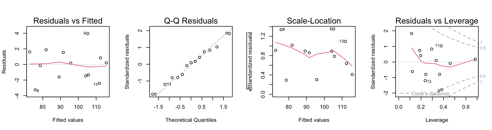
Nothing seems amiss on these plots. The three variable model seems satisfactory. Upon looking at the summary, one might argue for removing the variable x3.
For the logit analysis, first define the logit function:
logit <- function(x) log(x/(100-x))Now form the transformed data frame, and show the scatterplot matrix:
logitcement <- data.frame(logit(cement[,c("x1","x2","x3","x4")]),
y=cement[, "y"])
pairs(logitcement)
title(main="Scatterplot matrix for the logits of the proportions.")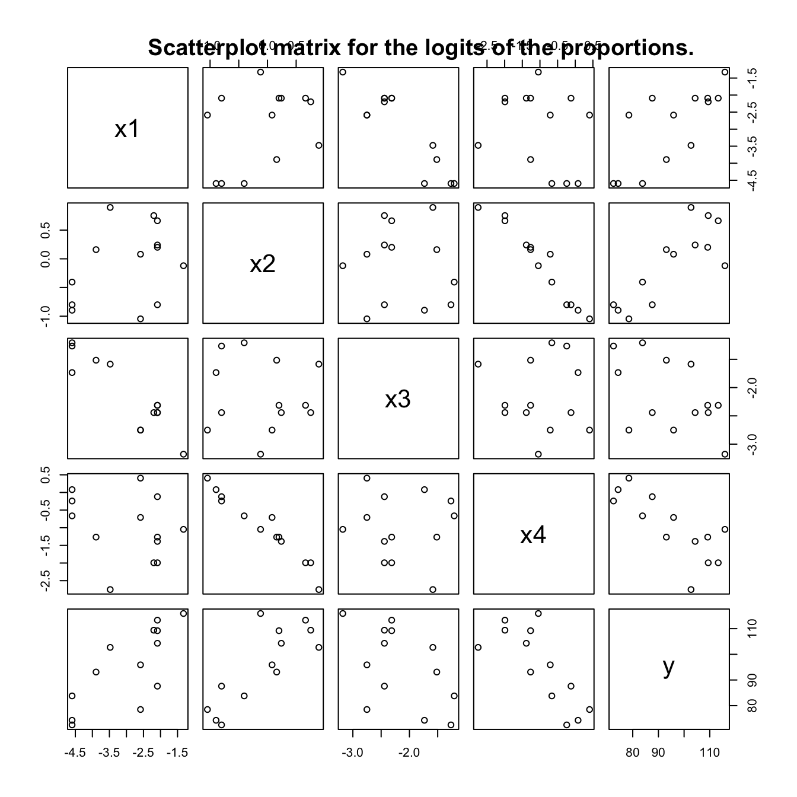
Notice that the relationship between x2 and x4 is now more nearly linear. This is helpful – it is advantageous for collinearities or multicollinearities to be explicit.
Now fit the full model, and plot the diagnostics:
logitcement.lm <- lm(y ~ x1+x2+x3+x4, data=logitcement)
par(mfrow=c(1,4))
plot(logitcement.lm)
title(main="Diagnostic plots for the model that works with logits")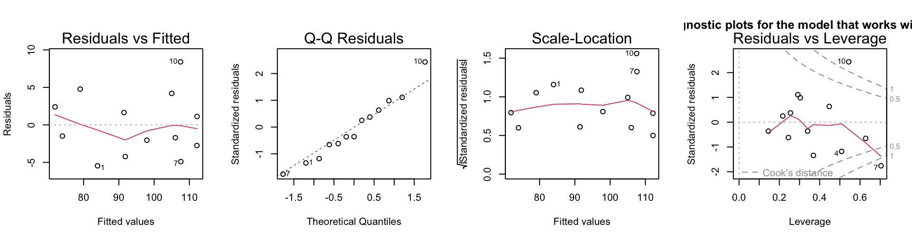
The multicollinearity is now less extreme, though still substantial. This happens because some observations now appear as influential outliers. Is it best not to transform the predictors?
Exercise 6
*The data frame hills2000 in our DAAG package has data, based on information from the Scottish Running Resource web site, that updates the 1984 information in the data set hills. Fit a regression model, for men and women separately, based on the data in hills2000. Check whether it fits satisfactorily over the whole range of race times. Compare the equation that you obtain with that based on the hills data frame.
hills2K <- DAAG::hills2000We begin with the same kind of transformed model that we tried in Section 3.2.2 for the hills data, examining the diagnostic plots and the termplots.
hills2K.loglm <- lm(log(time) ~ log(dist) + log(climb),
data=hills2K)
par(mfrow=c(1,4))
plot(hills2K.loglm)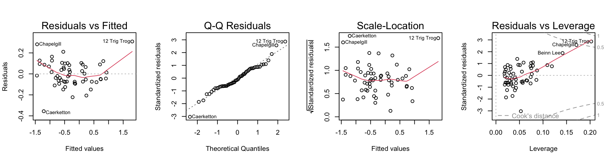
par(mfrow=c(1,2))
termplot(hills2K.loglm, transform.x=T, partial=T)The first of the diagnostic plots (residuals versus fitted values) reveals three potential outliers, identified as 12 Trig Trog, Chapelgill, and Caerketton.
A robust fit, which may be a safer guide, leads to quite similar diagnostic plots and termplots. Simply replace lm() by MASS::rlm() and repeat the plots.
The first of the diagnostic plots shows a bucket shaped pattern in the residuals, suggesting that the log(time) is not quite the right transformation of time. The following investigates the use of a power transformation:
bcPower Transformation to Normality
Est Power Rounded Pwr Wald Lwr Bnd Wald Upr Bnd
Y1 -0.0978 -0.1 -0.1778 -0.0178
Likelihood ratio test that transformation parameter is equal to 0
(log transformation)
LRT df pval
LR test, lambda = (0) 5.920789 1 0.014963
Likelihood ratio test that no transformation is needed
LRT df pval
LR test, lambda = (1) 238.116 1 < 2.22e-16A power transformation with \(\lambda\) = -0.1 is indicated. This leads to the fitted model ptime.rlm thus:
ptime.rlm <- MASS::rlm(car::bcPower(time, -0.1) ~ log(dist) +
log(climb), data=hills2K)
summary(ptime.rlm)
Call: rlm(formula = car::bcPower(time, -0.1) ~ log(dist) + log(climb),
data = hills2K)
Residuals:
Min 1Q Median 3Q Max
-0.461482 -0.067431 -0.007533 0.077235 0.240752
Coefficients:
Value Std. Error t value
(Intercept) -4.0568 0.1753 -23.1367
log(dist) 0.7969 0.0313 25.4924
log(climb) 0.3129 0.0284 11.0054
Residual standard error: 0.1058 on 53 degrees of freedomDiagnostic plots are:
par(mfrow=c(1,4))
plot(ptime.rlm, add.smooth=FALSE)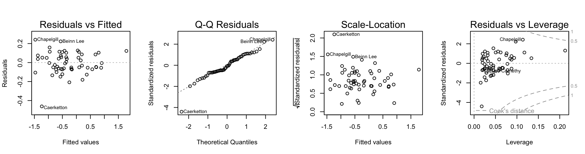
Caerketton now stands out.
For putting a smooth through the plot of residuals versus fitted values, one needs to do a robust fit. One can use a ‘loess()’ fit with family="symmetric". A more theoretically informed approach is to use a GAM smooth as described in Chapter 4, with family="scat".
plot(fitted(ptime.rlm), residuals(ptime.rlm))
res.gam <- mgcv::gam(residuals(ptime.rlm)~s(fitted(ptime.rlm)),
family='scat')
points(fitted(ptime.rlm), fitted(res.gam), col='red') 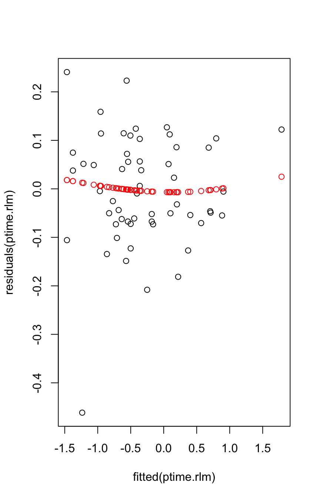
Now see how the fitted model fares when applied to the DAAG::hills dataset:
ptimehills <- car::bcPower(DAAG::hills$time, lambda=-0.1)
ppredhills <- predict(ptime.rlm, newdata=DAAG::hills)
plot(ppredhills, ptimehills)
abline(0,1)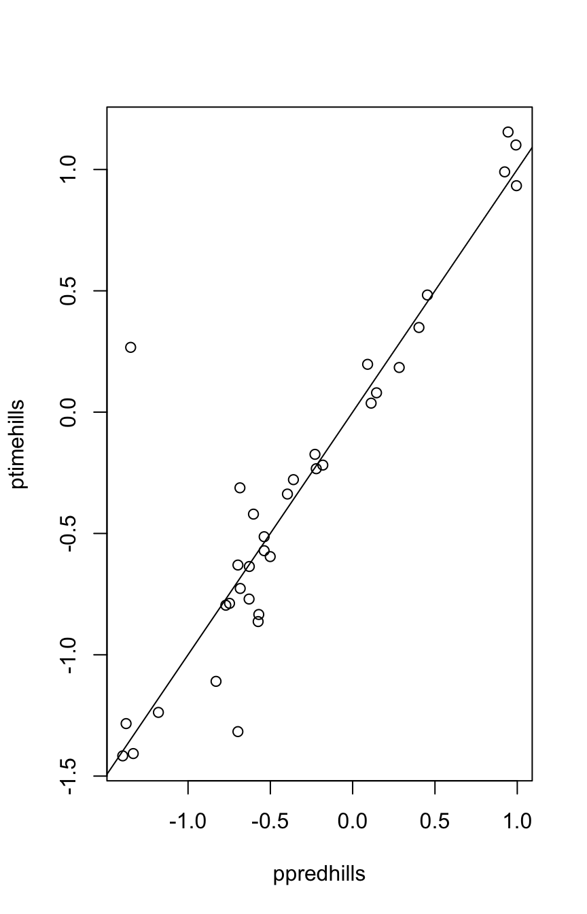
The line shows close agreement with the earlier data. As hills2000 was an update on the earlier hills data, this is not surprising.
The steps above should then be repeated for the female records.
Exercise 7
*Section 3.1 used lm() to analyze the allbacks data that are presented in Figure 3.1. Repeat the analysis using (1) the function rlm() in the MASS package, and (2) the function lqs()} in the MASS package. Compare the two sets of results with the results in Section 3.1.
Here are fits, w/wo intercept, using rlm()
library(MASS)
allbacks <- DAAG::allbacks
allbacks.rlm <- rlm(weight ~ volume+area, data=allbacks)
summary(allbacks.rlm)
Call: rlm(formula = weight ~ volume + area, data = allbacks)
Residuals:
Min 1Q Median 3Q Max
-80.860 -22.182 -9.578 34.540 232.258
Coefficients:
Value Std. Error t value
(Intercept) 9.2388 40.3159 0.2292
volume 0.7015 0.0422 16.6405
area 0.5145 0.0704 7.3106
Residual standard error: 39.43 on 12 degrees of freedomallbacks.rlm0 <- rlm(weight ~ volume+area-1, data=allbacks)
summary(allbacks.rlm0)
Call: rlm(formula = weight ~ volume + area - 1, data = allbacks)
Residuals:
Min 1Q Median 3Q Max
-86.00 -20.57 -10.30 36.13 231.76
Coefficients:
Value Std. Error t value
volume 0.7111 0.0185 38.5110
area 0.5168 0.0624 8.2877
Residual standard error: 39.7 on 13 degrees of freedomHere are plots of residuals against fitted values, for the two models.
Code is:
par(mfrow=c(1,2))
plot(allbacks.rlm, which=1) # residual plot
mtext(side=3, line=1, "rlm(), intercept included")
plot(allbacks.rlm0, which=1) # residual plot
mtext(side=3, line=1, "rlm(), no intercept")Comparison of the coefficients of the intercept and no-intercept with the lm() counterparts reveals larger differences in coefficient estimates for the intercept models. The robust method has given smaller coefficient standard errors than lm().
The influence of the outlying observation (the 13th) is reduced using the robust method; therefore, on the residual plots we see this observation featured even more prominently as an outlier than on the corresponding plots for the lm() fits.
We next consider the lqs() approach. By default, lqs() employs a resistant regression method called least trimmed squares regression (lts), an idea due to Rousseeuw (1984) (“Least median of squares regression.” Journal of the American Statistical Association 79: 871–888). The method minimizes the sum of the \(k\) smallest squared residuals, where \(k\) is usually taken to be slightly larger than 50% of the sample size. This approach removes all of the influence of outliers on the fitted regression line.
allbacks.lqs <- lqs(weight ~ volume+area, data=allbacks)
allbacks.lqs$coefficients # intercept model(Intercept) volume area
-59.6232046 0.7736944 0.4709100 allbacks.lqs0 <- lqs(weight ~ volume+area-1, data=allbacks)
coefficients(allbacks.lqs0) # no-intercept model volume area
0.7116612 0.4849406 The robust coefficient estimates of volume and area are similar to the corresponding coefficient estimates for the lm() fit.
Here are plots of residuals against fitted values, for the two models.
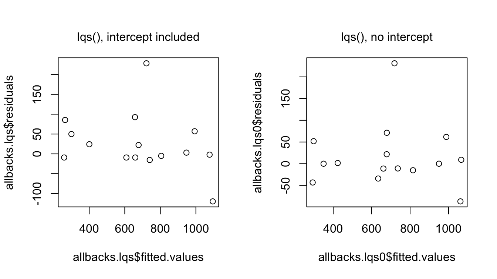
Because the outlying observation (13) is now not used at all in the final regression coefficient estimates, it has no influence. Neither does observation 11, another outlier. Both points plot farther away from the reference line at 0 than in the corresponding lm() residual plots.
Exercise 9
*Fit the model brainwt ~ bodywt + lsize to the litters dataset, then checking the variance inflation factors for bodywt and for lsize. Comment.
We can use the function vif() to determine the variance inflation factors for the litters data as follows: {r ex9, echo=TRUE} litters <- DAAG::litters litters.lm <- lm(brainwt ~ bodywt + lsize, data=litters) DAAG::vif(litters.lm) %
A scatterplot of litter size versus body weight would confirm that the two variables have a relation which is close to linear. The effect is to give inflated standard errors in the above regression, though not enough to obscure the relationship between brain weight and body weight and litter size completely.
It is hazardous to make predictions of brain weight for pigs having body weight and litter size which do not lie close to the line relating these variables.
Exercise 12
The data frame MPV::table.b3 has data on gas mileage and eleven other variables for a sample of 32 automobiles.
. Construct a scatterplot of y (mpg) versus x1 (displacement). Is the relationship between these variables nonlinear? - Use the xyplot() function, and x11 (type of transmission) as a group variable. Is a linear model reasonable for these data?
b. Fit the model, relating y to x1 and x11, which gives two lines having possibly different gradients and intercepts. Check the diagnostics. Are there any influential observations? Are there any influential outliers?
c. Plot the residuals against the variable x7 (number of transmission speeds), again using x11 as a group variable. Comment on anything unusual about this plot?
- See Panel A in the graph that follows The scatterplot suggests a curvilinear relationship.
- See Panel B in the graph that follows. This suggests that the apparent nonlinearity is better explained by the two types of transmission.
library(lattice)
## Panel A
gph1 <- xyplot(y ~ x1, data=MPV::table.b3)
## Panel B
library(lattice)
gph2 <- xyplot(y ~ x1, group=x11, data=MPV::table.b3)
c('A: Plot y vs x1'=gph1, 'B: Group by transmission type'=gph2, layout=c(2,1))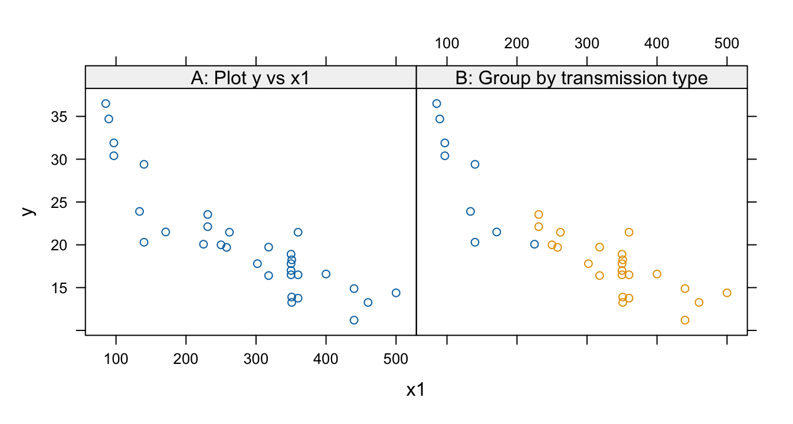
b3.lm <- lm(y ~ x1*x11, data=MPV::table.b3)
par(mfrow=c(1,4), pty="s")
plot(b3.lm)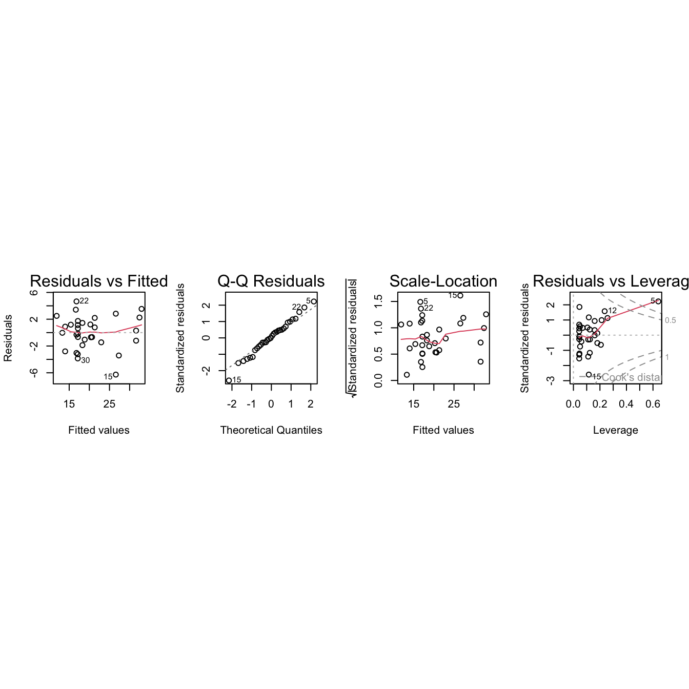
Observation 5 is influential, but it is not an outlier.
d.
xyplot(resid(b3.lm) ~ x7, groups=x11, data=MPV::table.b3, fig.aspect=1, out.width="50%")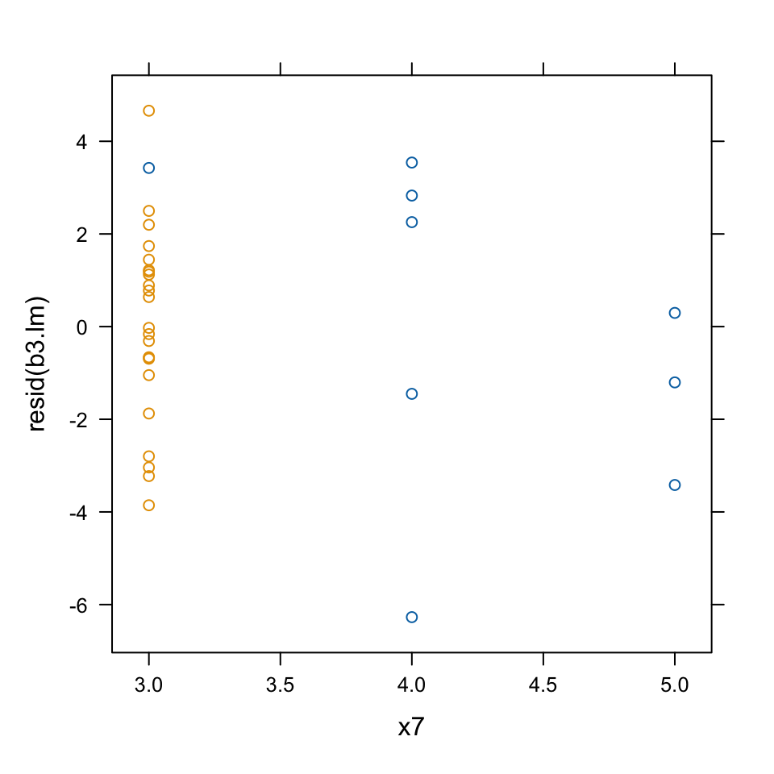
This plot demonstrates that observation 5 is quite special. It is based on the only car in the data set with a 3-speed manual transmission.